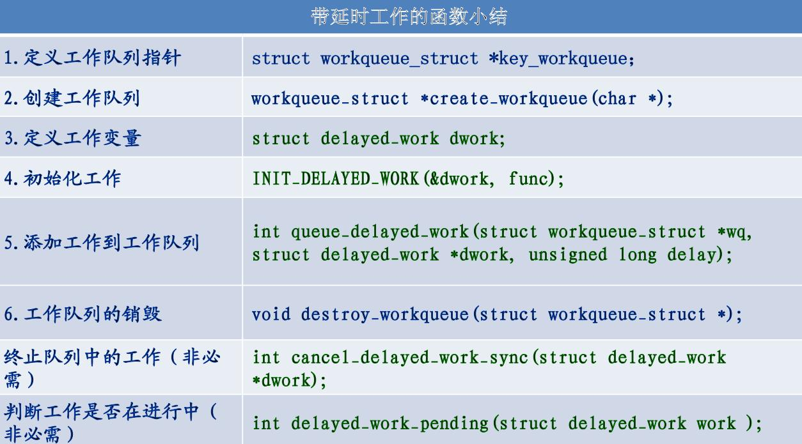

概述
特性：
支持睡眠和调度。
运行在内核线程上下文中。
除了系统提供的工作队列，用户还可以使用 alloc_workqueue 接口自行创建工作队列。
queue_work 接口，将 struct work_struct 类型的工作加入到指定工作队列中。
queue_delayed_work 中开启了定时器，而定时器的超时值就是用户传入的 delay 值，该接口默认地将当前工作队列添加到系统提供的 system_wq 中。
参考
API


demo
#include <linux/init.h>
#include <linux/module.h>
#include <linux/kernel.h>
#include <linux/workqueue.h>
MODULE_LICENSE("GPL");
struct wq_priv{
struct work_struct work;
struct delayed_work dl_work;
};
static void work_func(struct work_struct *work){
printk("exec work queue!\n");
}
static void dl_work_func(struct work_struct *work){
printk("exec delayed work queue!\n");
}
static struct wq_priv priv;
static int __init workqueue_init(void)
{
printk("hello world!!!\n");
//初始化 workqueue
INIT_WORK(&priv.work,work_func);
INIT_DELAYED_WORK(&priv.dl_work,dl_work_func);
//调度 workqueue
if(0 == schedule_work(&priv.work)){
printk("Failed to run workqueue!\n");
}
if(0 == schedule_delayed_work(&priv.dl_work,3*HZ)){
printk("Failed to run workqueue!\n");
}
return 0;
}
static void __exit workqueue_exit(void)
{
//退出 workqueue
cancel_work_sync(&priv.work);
cancel_delayed_work_sync(&priv.dl_work);
}
module_init(workqueue_init);
module_exit(workqueue_exit);